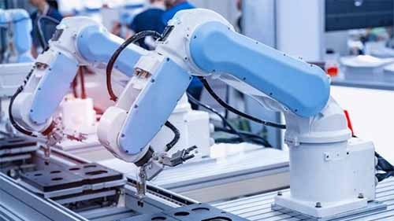
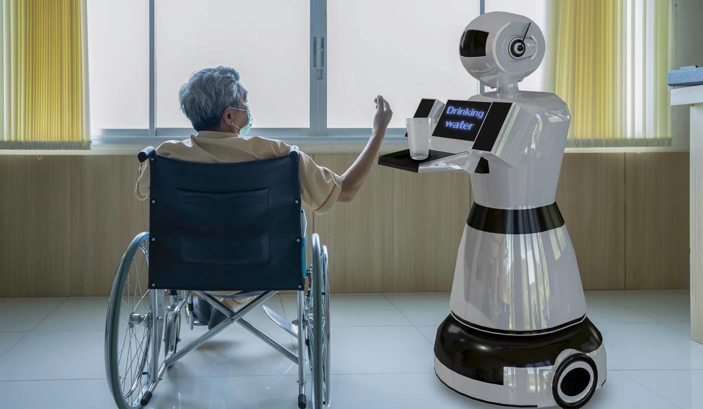
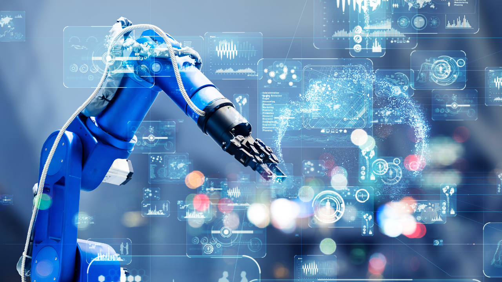
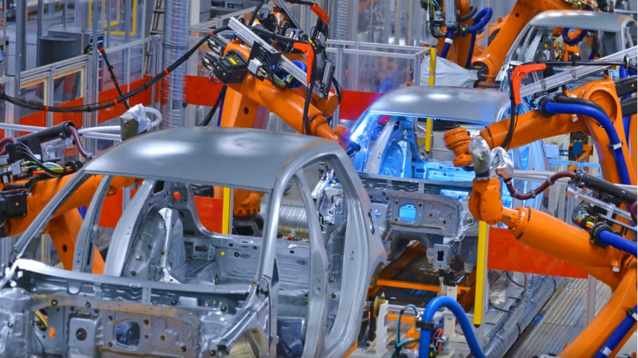
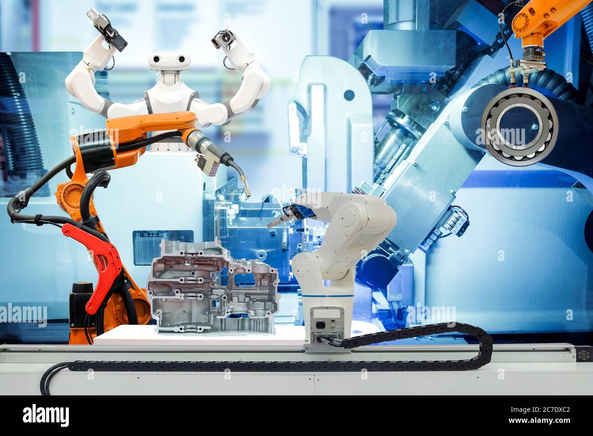
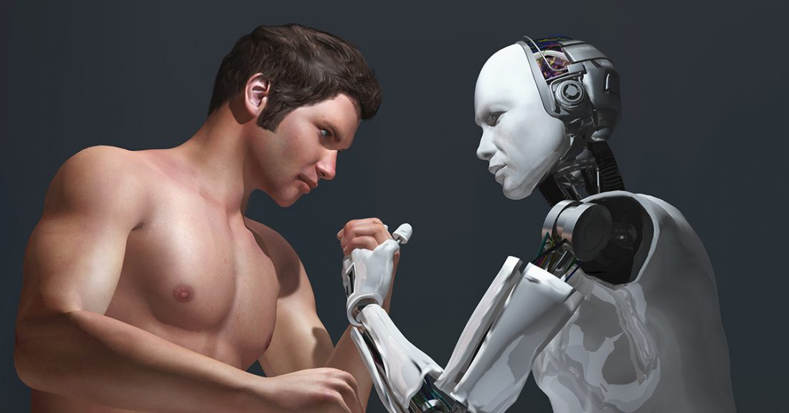
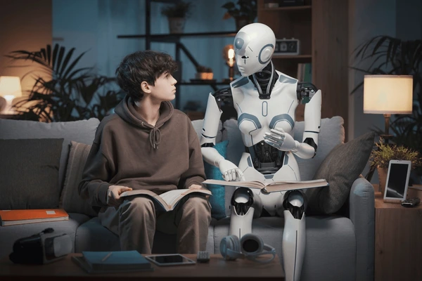

The World of Robotics
Explore the latest advancements in robotics and how they are shaping industries and society.
Home Page: Introduction to Robotics and Its Applications
Robotics is an interdisciplinary field that merges engineering, computer science, and technology to create machines capable of performing various tasks autonomously or semi-autonomously. These robots are often programmed to perform specific tasks, such as assembling products on a factory line, assisting in surgeries, or even exploring distant planets. Robotics has opened new possibilities for industries, healthcare, exploration, and personal use, leading to innovation in sectors that previously relied heavily on manual labor.
In recent years, advancements in artificial intelligence, machine learning, and sensor technologies have greatly enhanced the capabilities of robots. They are no longer just machines following preset instructions, but autonomous systems capable of learning, adapting, and interacting with their environment. From robotic arms in manufacturing to drones in agriculture, the world of robotics is rapidly evolving and has become a critical part of modern society.
|  |  |  |

|
Robots in different sectors
Robots in Industry: Key Advancements in Industrial Automation
Robots are revolutionizing industrial sectors by automating processes that previously required human labor. The most common types of industrial robots include robotic arms, which are widely used in the automotive, electronics, and consumer goods industries. These machines can perform tasks with precision, speed, and endurance beyond human capabilities, such as welding, painting, assembling, and packaging.
In addition to reducing production time and costs, industrial robots can work in hazardous environments where human safety might be at risk, such as in handling toxic materials or working in extreme temperatures. As the demand for mass production grows, robots are becoming essential for maintaining the pace and quality required in modern manufacturing. The future of industrial robots includes increased collaboration between robots and humans, with robots assisting workers in complex tasks that require high-level decision-making.
|  |  |
Industrial robots at work
Humanoid Robots: Overview of Humanoid Robots and Their Capabilities
Humanoid robots are robots designed to resemble and mimic human behavior, both in appearance and functionality. These robots are capable of performing tasks traditionally reserved for humans, such as assisting in healthcare, customer service, and education. The defining characteristic of humanoid robots is their ability to interact with humans in a natural and intuitive way, using advanced algorithms for speech recognition, facial expression interpretation, and decision-making.
Some of the most well-known humanoid robots include robots like ASIMO, Sophia, and Atlas, which have been designed for various purposes, from assisting the elderly and disabled to performing dangerous tasks in disaster-stricken areas. Humanoid robots are also becoming an integral part of research and development, where they help scientists better understand human cognition, biomechanics, and social interaction. With continued advancements in artificial intelligence and robotics, humanoid robots are expected to become more autonomous, capable of learning from experience, and performing increasingly complex tasks in the future.
|  |  |
Humanoid robot interacting with people
Key Points in Robotics
- Robotics is an interdisciplinary field involving engineering, computer science, and technology.
- Robots are used in various sectors like healthcare, industry, and space exploration.
- Industrial robots automate processes and improve productivity and safety in industries.
- Humanoid robots can perform tasks similar to humans and interact naturally with people.
- Advances in Al and machine learning are making robots more autonomous and adaptive.
| Category | Description | Key Example | Application |
|---|---|---|---|
| Industrial Robots | Robots that automate industrial tasks like welding, assembling, and packaging. | Robotic Arm | Automotive and manufacturing industries. |
| Humanoid Robots | Robots designed to mimic human behavior and interact with humans. | Sophia | Healthcare, customer service, and research. |
| Autonomous Robots | Robots capable of performing tasks with little to no human intervention. | Self-Driving Car | Transport, logistics, and military. |
| Exploratory Robots | Robots used in space exploration and deep-sea research. | Rover | NASA's Mars exploration. |
Conclusion
The world of robotics continues to evolve, with advancements in technology paving the way for robots to take on more complex and varied roles in our daily lives. As these machines become more integrated into society, they hold the potential to enhance our capabilities, improve efficiency, and ultimately change the way we live and work.
For more information on neuroscience, visit BrainFacts.org.